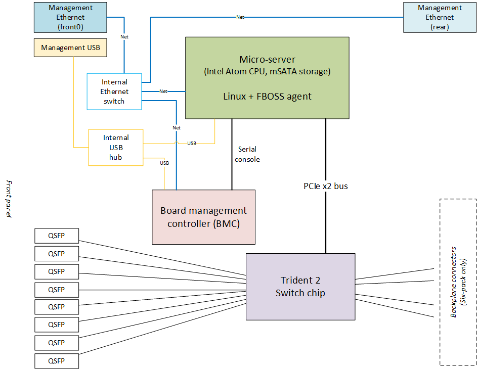
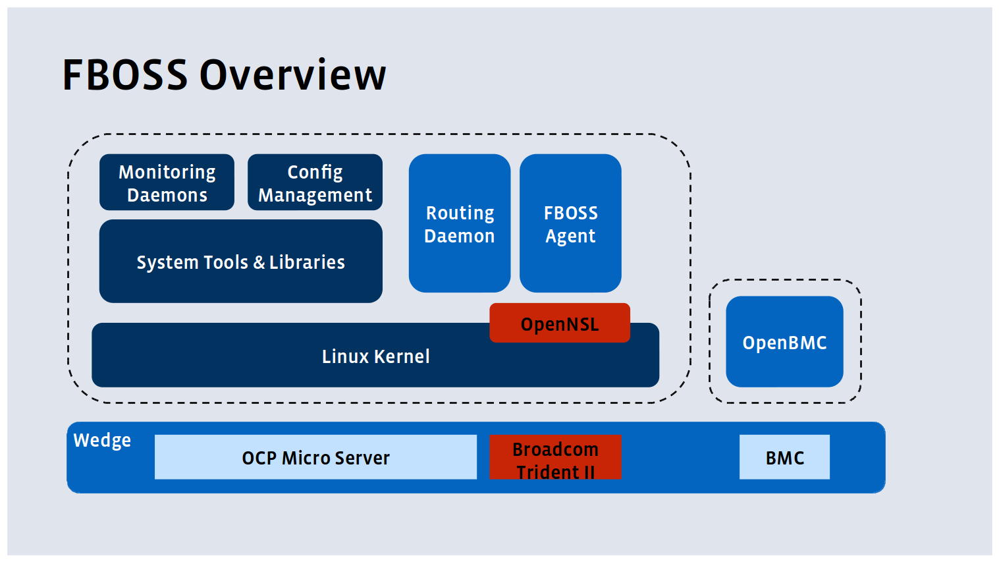

NOTE: There are currently
errors in this diagram ma1 is the mgmt interface and front0 is
the connection to the the trident.
There three pieces to the FBOSS Wedge 40 switch:
The BMC has a serial line to the microserver and can get serial on it, as well as powercycle it.
The BMC and the microserver are connected by a usb line and each has a usbnet interface to the other.
The microserver is connected to the Trident over a PCI bus which speaks a proprietary Broadcom protocol to configure it. That protocol is exposed via OpenNSL libraries and a proprietary kernel driver.
The open-source FBOSS agent exposes a CLI and a thrift interface and converts that to the OpenNSL calls to program or query the Trident.
The software stack looks like this:
